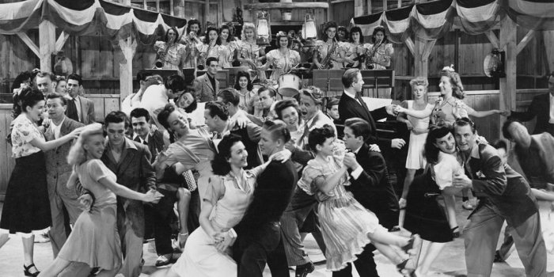

DET GLADA 20-TALET
När första världskriget äntligen tog slut var de flesta överens om att krig nu var över. Speciellt i USA pratades om det glada 20-talet. Nya varor togs fram från industrierna som hjälpte vardagslivet ofantligt. Frisyrer och kläder blev mer enkla och fria. Ungdomar började roa sig genom att bland annat gå på bio och lyssna på grammofonskivor. Filmer blev mer populära än någonsin och i Amerika blev Hollywood filmproduktionens center. En ny modernare tid med fred och framsteg hade kommit.

För Tyskland gick ekonomin bättre och bättre. Efter första världskriget var Tyskland i princip orört. Kriget hade inte utspelat sig inne i det tyska moderlandet. Alla fabriker stod kvar. Allt som behövdes var bara pengar. Genom att byta penningsystem och låna pengar utomlands, från bland annat USA, blev livet i Tyskland rätt bra under 20-talet. Invånarna hade jobb, med bra lön också. Berlin lockade människor från hela Europa som ville roa sig. Det var en av Europas populäraste städer för festligheter och nöje. Framtiden började se ljus ut för Tyskland.
Nästa Sida →